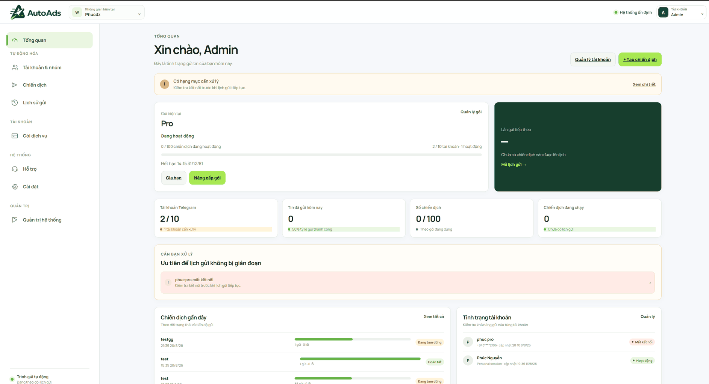
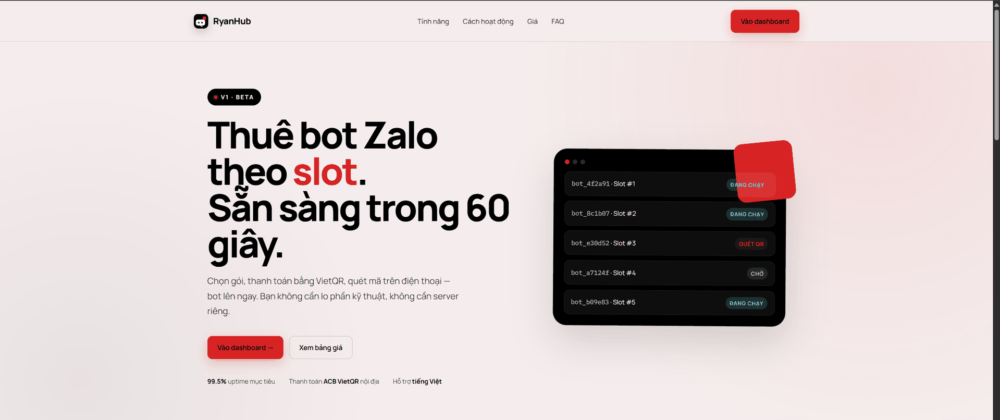
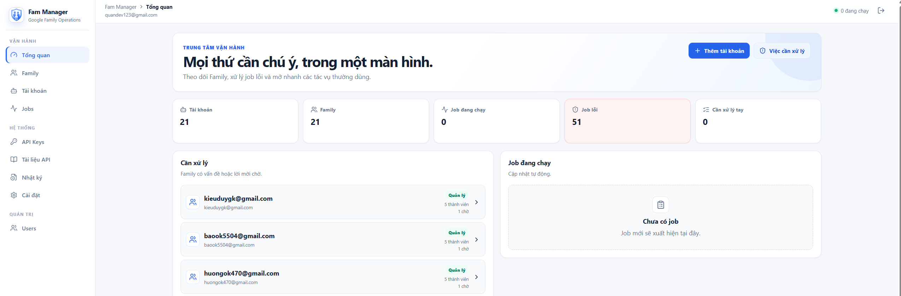

AutoAds — Telegram Automation Dashboard
An admin dashboard for scheduling and monitoring automated Telegram message campaigns: account/group management, campaign status and live send-history tracking.
DashboardAutomationA few example projects. Use the filters below to browse by category.

An admin dashboard for scheduling and monitoring automated Telegram message campaigns: account/group management, campaign status and live send-history tracking.
DashboardAutomation
A marketing landing page for a slot-based Zalo bot rental service, with pricing, VietQR payment flow and a live "dashboard" preview mock-up on the hero section.
Landing PageProduct Marketing
An internal operations dashboard for managing Google Family groups at scale: account overview, background job monitoring, API key management and activity logs.
DashboardAPI